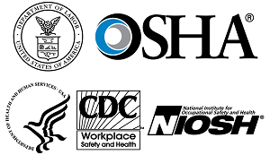

The following contact information is not for emergency situations.
If you have questions, call OSHA. It's confidential. Call 1 (800) 321-OSHA (6742) or visit www.osha.gov to learn more about heat illness.
To receive NIOSH documents or more information, contact NIOSH at
1-800-CDC-INFO (1-800-232-4636)
TTY: 1-888-232-6348
E-mail: cdcinfo@cdc.gov
or visit the NIOSH website at www.cdc.gov/niosh
For worker fact sheets, worksite posters, training materials, and other resources on preventing heat-related illness in outdoor workers, in both English and Spanish, see OSHA's heat illness web page and NIOSH's heat stress topic page.
For other valuable worker protection information, such as Workers' Rights, Employer Responsibilities, and other services OSHA offers, visit OSHA's Workers page.
